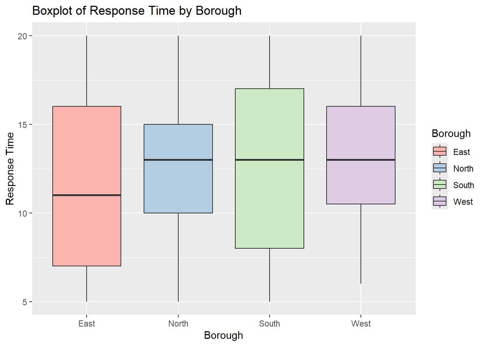
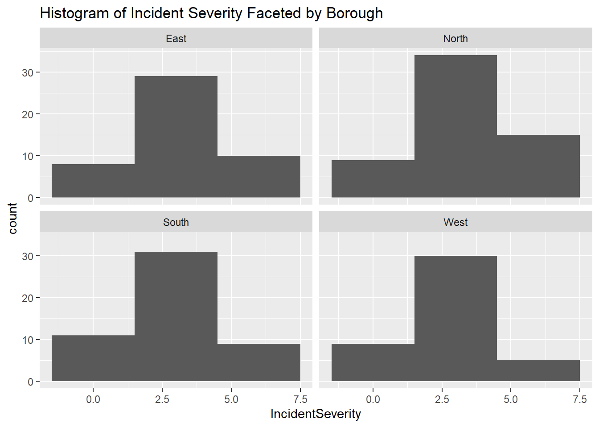
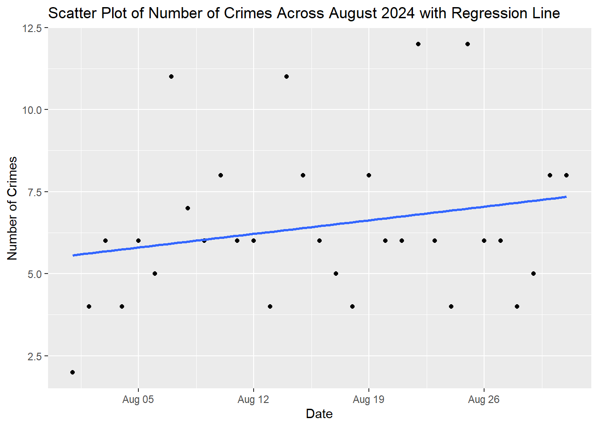
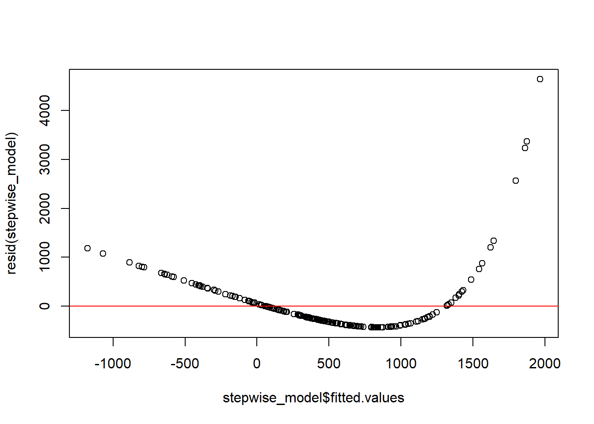
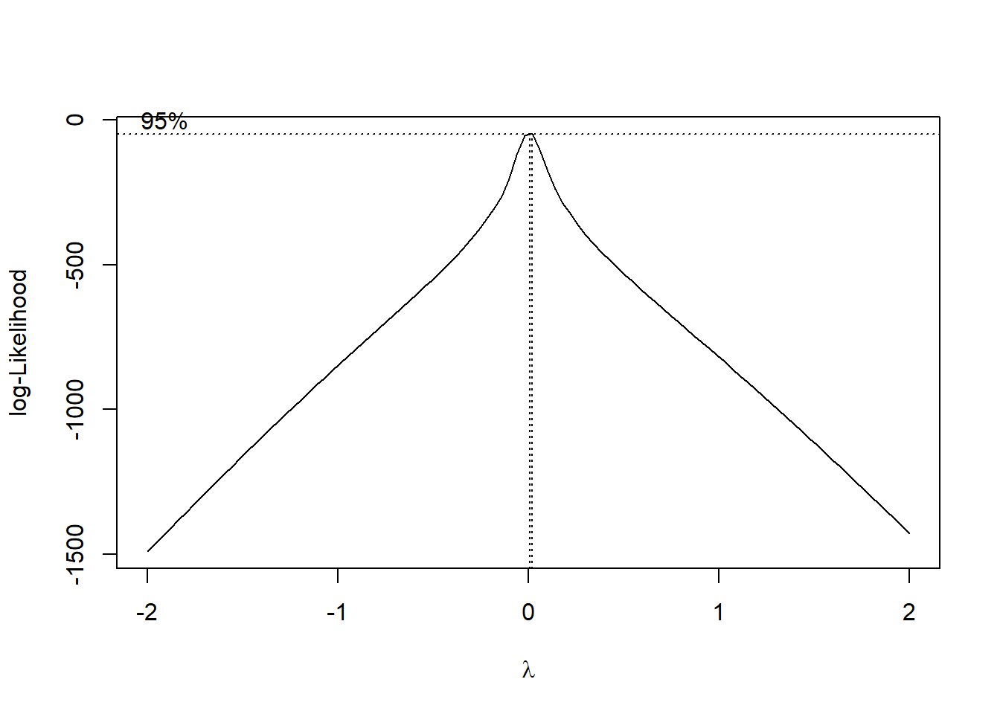
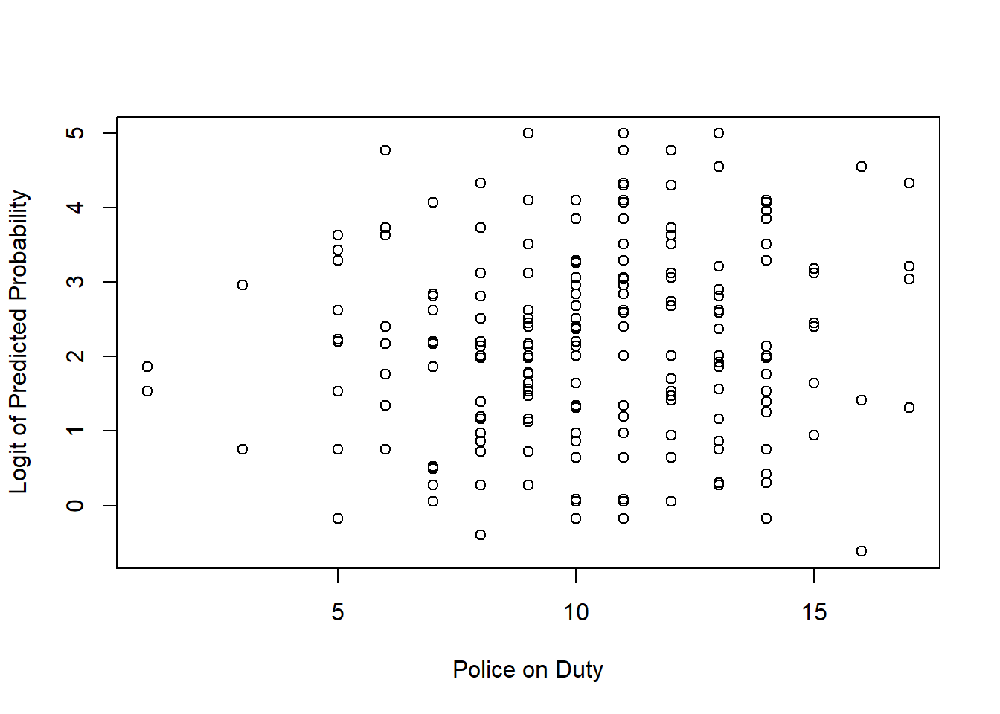

Exercise Answers
Chapter 2
Exercise 2.1
Execute these operations in R and compare with results from SPSS’s Compute function. Can you do this in both the console and the script editor?
Exercise 2.3
Between January 2023 and December 2023 the number of Violent and Sexual Offences in Wandsworth were as follows: 568, 568, 603, 604, 685, 871, 697, 608, 657, 681, 630, and 720. (1) Create a vector representing the number of Violent and Sexual Offences in Wandsworth. (2) What was the mean number of crimes each month? (3) What was the total number of crimes across the year? (4) What is the length of the vector?
#Create a vector representing all Violent & Sexual Offences in Wandsworth in 2023
wandsworth_vso_2023 <- c(568, 568, 603, 604, 685, 871, 697, 608, 657, 681, 630, 720)
#Calculate the Monthly Average
mean_wandsworth_vso_2023 <- mean(wandsworth_vso_2023)
paste("Mean Number of Monthly V&S Offences in Wandsworth in 2023: ", mean_wandsworth_vso_2023)## [1] "Mean Number of Monthly V&S Offences in Wandsworth in 2023: 657.666666666667"#Total Number of Crimes
total_wandsworth_vso_2023 <- sum(wandsworth_vso_2023)
paste("Total Number of V&S Offences in Wandsworth in 2023: ", total_wandsworth_vso_2023)## [1] "Total Number of V&S Offences in Wandsworth in 2023: 7892"## [1] "Length of Vector: 12"Chapter 3
Exercise 3.1
Go to https://data.police.uk/data/ and download a CSV file of Metropolitan Police Service data for January 2024. Load the CSV file into a R dataframe called data_mps. How many observations and variables are there?
#Load the data from CSV file
mps_2024_01 <- read.csv('data/2024-01-metropolitan-street.csv')
#Return the size
paste("Number of Observations: ", dim(mps_2024_01)[1])## [1] "Number of Observations: 91411"## [1] "Number of Variables: 12"Exercise 3.2
Some of the commands above are composite commands encompassing multiple functions. Can you break them down to understand what each part of the function is doing?
# Remove any columns with missing data
data_mps_clean <- data_mps[, colSums(is.na(data_mps)) == 0]
# is.na(data_mps) identifies any NA values returning a Boolean, 1 = Yes, 0 = No
# colSums(x) adds the values in each column
# data_mps[, x] subsets the data to only select column x
# Together, this function identifies the columns with no missing values,
# Produces a cleaned subset by dropping an columns with missing values
# Replace missing values with a specific value, such as 0.
data_mps[is.na(data_mps)] <- 0
# is.na(data_mps) identifies any NA values returning a Boolean, 1 = Yes, 0 = No
# data_mps[x] <- 0 sets the value x to zero
# Together, this function identifies the missing data
# Replaces the missing value with a 0.
#Replace missing values with a column value (e.g. Mode, Mean, ...)
data_mps$Latitude[is.na(data_mps$Latitude)] <- mean(data_mps$Latitude, na.rm = TRUE)
# mean(data_mps$Latitude, na.rm = TRUE) calculates the average latitude
# na.rm = TRUE means it does this excluding the missing values
# is.na(data_mps$Latitude) identifies any missing latitudes
# Together, this function calculates the average latitude, excluding missing values
# Assings any missing latitudes the average value.Exercise 3.3
In the examples above, in the second example we replaced all missing values with 0. We also replaced any missing latitudes with the average latitude across the dataset in the fourth example. Were these the best imputation choices? What method would you have chosen for dealing with outliers?
It does not make analytical sense to replace all missing values in the dataset. We have a variety of data formats such as factors including the Crime Type, dates in the format of the Month, as well as character data for location. Each variable should be considered individually to perform the best possible strategy of dealing with NA values.
It does not make sense to replace the missing latitudes with the average latitude as this could effect our analysis. Depending on the analysis to be performed and the number of missing values it would be better to drop observations with a missing latitude or set it to a value outside the geographic range of analysis.
Exercise 3.4
The Context column is full of NA values. Can you subset the dataset to remove this column? Can you then filter the dataset to create a new dataframe called data_mps_drugs containing only crimes with the Crime Type recorded as ‘Drugs’.
##
## Attaching package: 'dplyr'## The following object is masked from 'package:car':
##
## recode## The following objects are masked from 'package:stats':
##
## filter, lag## The following objects are masked from 'package:base':
##
## intersect, setdiff, setequal, union#Using Separate Functions
mps_2024_01_drop <- select(mps_2024_01, -Context)
mps_2024_01_drugs_1 <- filter(mps_2024_01_drop, Crime.type == 'Drugs')
#Using a dplyr pipeline
mps_2024_01_drugs_2 <- mps_2024_01 %>%
select(-Context) %>% #Drop the 'Context' column
filter(Crime.type == 'Drugs') #Filter Crime TypeExercise 3.6
Using the original data_mps dataframe can you recreate the data_mps_drugs dataframe using the dplyr pipeline operator with the relevant select and filter commands?
Exercise 3.8
Convert the Last Outcome Category to a categorical variable and view a cross-tabulation of the outcomes with the crime types. Which Crime Type has the highest number of Complete Investigations Where No Suspect Was Identified?
#Convert the Last Outcome column into a factor.
mps_2024_01$Last.outcome.category <- factor(mps_2024_01$Last.outcome.category)
#Create cross-tabulation
table(mps_2024_01$Crime.type , mps_2024_01$Last.outcome.category)##
## Awaiting court outcome Investigation complete; no suspect identified Local resolution Offender given a caution
## Anti-social behaviour 16514 0 0 0 0
## Bicycle theft 0 1 672 0 0
## Burglary 0 61 2257 1 1
## Criminal damage and arson 0 78 2721 18 25
## Drugs 0 228 318 627 37
## Other crime 0 36 245 28 3
## Other theft 0 14 6252 5 2
## Possession of weapons 0 78 52 5 5
## Public order 0 95 1460 7 3
## Robbery 0 39 778 1 0
## Shoplifting 0 122 3375 81 13
## Theft from the person 0 13 4296 2 1
## Vehicle crime 0 20 6487 0 0
## Violence and sexual offences 0 454 6199 44 68
##
## Offender given a drugs possession warning Offender given penalty notice Status update unavailable
## Anti-social behaviour 0 0 0
## Bicycle theft 0 0 296
## Burglary 0 0 2762
## Criminal damage and arson 0 4 2028
## Drugs 7 169 1327
## Other crime 0 0 519
## Other theft 0 0 4024
## Possession of weapons 0 0 269
## Public order 0 2 2592
## Robbery 0 0 2128
## Shoplifting 0 19 1443
## Theft from the person 0 0 2603
## Vehicle crime 0 0 2463
## Violence and sexual offences 0 1 14913The VEHICLE CRIME, crime type has the highest number of Complete Investigations Where No Suspect Was Identified.
Chapter 5
Exercise 5.1
Download the police_activity_data.csv file and load it into a R data frame. Produce a basic summary of the Response Time variable. What does the difference between the Mean and Median measure tell you about the skewness of the data?
#Load data
police_activity_data <- read.csv('data/police_activity_data.csv')
#Summary of Response Time Variable
summary(police_activity_data$ResponseTime)## Min. 1st Qu. Median Mean 3rd Qu. Max.
## 5.00 9.00 13.00 12.42 16.00 20.00The Mean (12.42) is SMALLER than the Median (13.00). When the mean of a dataset is smaller than the median, it generally indicates that the data distribution is left-skewed (or negatively skewed). In a left-skewed distribution, the tail on the left side of the distribution is longer than the tail on the right side. This means there are a few low values that pull the mean down, while the majority of the data are higher, which positions the median closer to the upper range of the data.
Excercise 5.2
Create a Bar Chart of the Borough variable in the police_activity_data dataset. Which borough has the greatest number of crimes?
#Load the ggplot2 library
library(ggplot2)
# Bar chart for a categorical variable
ggplot(police_activity_data, aes(x = Borough)) +
geom_bar() +
labs(title = "Bar Chart Displaying the Number of Incidents in Each Borough in August 2024", x = "Borough", y = "Number of Incidents") > The NORTH borough had the most incidents in the period in question.
> The NORTH borough had the most incidents in the period in question.
Exercise 5.3
Create a Histogram of the ResponseTime variable in the police_activity_data dataset setting the bin size to 4. How is the response time distributed?
ggplot(police_activity_data, aes(x = ResponseTime)) +
geom_histogram(binwidth = 4, fill = "blue", color = "black") +
labs(title = "Histogram of Response Time", x = "Response Time (Minutes)", y = "Frequency")
The histogram shows the distribution of response times, with most values concentrated between 8 and 16 minutes. The distribution appears roughly normal, with no strong skewness, indicating a fairly even spread of response times across this range. The tails on both sides are shorter, suggesting fewer instances of very short (less than 5 minutes) or very long (more than 20 minutes) response times.
Exercise 5.4
Create a Boxplot of the ResponseTime variable for each of the Borough in the police_activity_data dataset. Which Borough has the lowest Median response time? Which Borough has the smallest range of response times?
ggplot(police_activity_data, aes(x = Borough, y = ResponseTime)) +
geom_boxplot() +
labs(title = "Boxplot of Response Time by Borough", x = "Borough", y = "Response Time") > The EAST borough has the lowest MEDIAN RESPONSE TIME.
> The WEST borough had the smallest RANGE OF RESPONSE TIMES.
> The EAST borough has the lowest MEDIAN RESPONSE TIME.
> The WEST borough had the smallest RANGE OF RESPONSE TIMES.
Exercise 5.6
Using your Boxplot Diagram of the ResponseTime variable for each of the Borough in the police_activity_data dataset. Add some colour!
ggplot(police_activity_data, aes(x = Borough, y = ResponseTime, fill = Borough)) +
geom_boxplot() +
labs(title = "Boxplot of Response Time by Borough", x = "Borough", y = "Response Time") +
scale_fill_brewer(palette = "Pastel1")
Exercise 5.7
Using the police_activity_data dataset, calculate the mean and standard deviation of the ResponseTime based on the IncidentType. Which Incident Type had the greatest mean response time?
# Load the dplyr library
library(dplyr)
# Summarise data: mean and standard deviation by group
police_activity_data_summary <- police_activity_data %>%
group_by(IncidentType) %>%
summarize(
mean_value = mean(ResponseTime, na.rm = TRUE),
sd_value = sd(ResponseTime, na.rm = TRUE)
)
#Print results
print(police_activity_data_summary)## # A tibble: 5 × 3
## IncidentType mean_value sd_value
## <chr> <dbl> <dbl>
## 1 Assault 11.8 4.14
## 2 Burglary 12.2 4.30
## 3 Public Disturbance 11.3 4.12
## 4 Robbery 13.4 4.07
## 5 Traffic Stop 13.4 4.58ROBBERY had the GREATEST MEAN RESPONSE TIME.
Exercise 5.8
Building on the previous exercise, create a plot of the mean ResponseTime based on the IncidentType. The factors along the x-axis should be sorted alphabetically. Can you try sorting these in ascending order of their mean?
ggplot(police_activity_data_summary, aes(x = reorder(IncidentType, mean_value), y = mean_value)) +
geom_bar(stat = "identity") +
labs(title = "Mean Response Time by Incident Type",
x = "Incident Type",
y = "Mean Response Time")
Excerise 5.9
Use the facet wrap functionality to create a series of histograms representing the IncidentSeverity across the four different boroughs using a binwidth of 3. How does the response time vary across the four different boroughs?
ggplot(police_activity_data, aes(x = IncidentSeverity)) +
geom_histogram(binwidth = 3) +
facet_wrap(~Borough) +
labs(title = "Histogram of Incident Severity Faceted by Borough")
The distribution of incident severity is fairly consistent across all boroughs, with most incidents falling within the mid-range of severity on the severity scale.
Exercise 5.10
Using dplyr produce a count of the number of crimes that occurred on each day. Use this information to create a scatterplot with a regression line. What do you notice about the trend?
summary_data <- police_activity_data %>%
group_by(Date) %>% # Group by the 'Date' column
summarize(count = n()) # Produce a Count
ggplot(summary_data , aes(x = as.Date(Date), y = count)) +
geom_point() +
geom_smooth(method = "lm", se = FALSE) +
labs(title = "Scatter Plot of Number of Crimes Across August 2024 with Regression Line", x = "Date", y = "Number of Crimes")## `geom_smooth()` using formula = 'y ~ x'
Chapter 6
You have a dataset from a national survey on perceptions of crime. This dataset provides a comprehensive analysis of crime and policing by examining crime types, victim demographics, police responses, community engagement, and socioeconomic factors to understand the respondents crime experiences and perceptions. Download the Crime Survey Data (SPSS Format) and perform a descriptive analysis of the data. The steps you need to follow are listed below to help you.
## Loading required package: grid## Loading required package: survival##
## Attaching package: 'survival'## The following object is masked from 'package:caret':
##
## cluster##
## Attaching package: 'survey'## The following object is masked from 'package:graphics':
##
## dotchart#Load the dataset
survey_data <- read_sav("data/crime_survey_data.sav")
#View loaded data
head(survey_data)## # A tibble: 6 × 21
## id region crime_type satisfaction programs gender incident_severity response_time victim_age victim_gender victim_ethnicity police_action community_engagement
## <dbl> <chr> <chr> <dbl> <dbl> <chr> <chr> <dbl> <chr> <chr> <chr> <chr> <dbl>
## 1 1 East Assault 5 1 Male Serious 8 55+ Other Asian Warning 3
## 2 2 East Vandalism 2 6 Female Minor 91 18-24 Female Asian Arrest 2
## 3 3 East Vandalism 3 3 Male Moderate 18 18-24 Other Hispanic Investigation 1
## 4 4 South Assault 1 5 Male Serious 120 18-24 Other Asian Investigation 1
## 5 5 East Theft 5 1 Female Minor 15 18-24 Female Black Arrest 1
## 6 6 South Theft 3 6 Female Minor 55 Under 18 Female Black Warning 4
## # ℹ 8 more variables: perceived_crime_rate <chr>, education <chr>, employment_status <chr>, household_income <chr>, living_situation <chr>, previous_victimization <chr>,
## # neighborhood_safety <dbl>, weight <dbl>#Create a survey design object
survey_design <- svydesign(
id = ~id,
weights = ~weight,
data = survey_data
)
#Create a frequency distribution of the crime_type
svytable(~crime_type, design = survey_design)## crime_type
## Assault Burglary Theft Vandalism
## 146.0768 142.8698 161.8578 172.4434## gender
## Female Male
## 284.1523 339.0955##
## Attaching package: 'janitor'## The following objects are masked from 'package:stats':
##
## chisq.test, fisher.test#Cross-tabulate crime_type by region and gender (separately and together) to see the distribution across different regions and genders.
# Cross-tabulation with janitor: Crime Type & Region
crime_region_tab <- svytable(~crime_type + region, survey_design)
# Print results
print(crime_region_tab)## region
## crime_type East North South West
## Assault 38.00701 37.61599 32.31634 38.13746
## Burglary 26.63030 45.57457 47.72543 22.93950
## Theft 34.02101 50.79713 45.24576 31.79386
## Vandalism 51.57803 46.30077 42.95608 31.60851# Cross-tabulation with janitor: Crime Type & Gender
crime_gender_tab <- svytable(~crime_type + gender, survey_design)
# Print results
print(crime_region_tab)## region
## crime_type East North South West
## Assault 38.00701 37.61599 32.31634 38.13746
## Burglary 26.63030 45.57457 47.72543 22.93950
## Theft 34.02101 50.79713 45.24576 31.79386
## Vandalism 51.57803 46.30077 42.95608 31.60851## Cross-tabulation with survey: Crime Type & Region + Gender
crime_region_gender_tab <- svytable(~crime_type + region + gender, survey_design)
# Print results
print(crime_region_gender_tab)## , , gender = Female
##
## region
## crime_type East North South West
## Assault 16.89515 11.89451 17.06074 17.06962
## Burglary 12.62156 24.57370 18.88147 11.25734
## Theft 13.91476 24.26910 24.08906 15.52493
## Vandalism 27.34231 23.79401 10.02678 14.93727
##
## , , gender = Male
##
## region
## crime_type East North South West
## Assault 21.11187 25.72148 15.25560 21.06784
## Burglary 14.00874 21.00087 28.84396 11.68215
## Theft 20.10625 26.52803 21.15670 16.26893
## Vandalism 24.23571 22.50676 32.92930 16.67125#Create a new variable to categorise satisfaction into high and low satisfaction (above 3 = High, 3 or below = Low).
survey_data <- survey_data %>%
mutate(satisfaction_rank = ifelse(satisfaction > 3, "High", "Low"))
#Output check
head(survey_data)## # A tibble: 6 × 22
## id region crime_type satisfaction programs gender incident_severity response_time victim_age victim_gender victim_ethnicity police_action community_engagement
## <dbl> <chr> <chr> <dbl> <dbl> <chr> <chr> <dbl> <chr> <chr> <chr> <chr> <dbl>
## 1 1 East Assault 5 1 Male Serious 8 55+ Other Asian Warning 3
## 2 2 East Vandalism 2 6 Female Minor 91 18-24 Female Asian Arrest 2
## 3 3 East Vandalism 3 3 Male Moderate 18 18-24 Other Hispanic Investigation 1
## 4 4 South Assault 1 5 Male Serious 120 18-24 Other Asian Investigation 1
## 5 5 East Theft 5 1 Female Minor 15 18-24 Female Black Arrest 1
## 6 6 South Theft 3 6 Female Minor 55 Under 18 Female Black Warning 4
## # ℹ 9 more variables: perceived_crime_rate <chr>, education <chr>, employment_status <chr>, household_income <chr>, living_situation <chr>, previous_victimization <chr>,
## # neighborhood_safety <dbl>, weight <dbl>, satisfaction_rank <chr>#Update the survey design with the new variable.
survey_design_updated <- update(survey_design,
satisfaction_rank = survey_data$satisfaction_rank)
# Mean number of community programs by satisfaction level
mean_programs_satisfaction <- svyby(~programs, ~satisfaction_rank, survey_design_updated, svymean)
# Print results
print(mean_programs_satisfaction)## satisfaction_rank programs se
## High High 5.536490 0.2209763
## Low Low 5.665286 0.1801161# Mean number of community programs by gender
mean_programs_gender <- svyby(~programs, ~gender, survey_design_updated, svymean)
# Print results
print(mean_programs_gender)## gender programs se
## Female Female 5.423680 0.2140237
## Male Male 5.774012 0.1823737Chapter 7
Exercise 7.1
The Metropolitan Police Service have implemented a new strategy to target Violence Against Women and Girls in 6 wards. The number of incidents in March across these 6 wards was 100, 102, 104, 106, and 108. After the implementation of the new strategy the number of incidents in April across these 6 wards was 110, 111, 115, 117, 120 respectively. Has the new strategy had an impact on the number of incidents?
#Input the pre-treatment values
pre_treatment <- c(100, 102, 104, 106, 108)
#Input the post-treatment values
post_treatment <- c(110, 111, 115, 117, 120)
t.test(pre_treatment, post_treatment, paired = TRUE)##
## Paired t-test
##
## data: pre_treatment and post_treatment
## t = -20.788, df = 4, p-value = 3.164e-05
## alternative hypothesis: true mean difference is not equal to 0
## 95 percent confidence interval:
## -12.015715 -9.184285
## sample estimates:
## mean difference
## -10.6The p-value is smaller than 0.05 indicating statistical significance. A significant result indicates that the mean difference between the pre-treatment and post-treatment measures is unlikely to have occurred by chance. In other words, the treatment (or intervention) has had a measurable effect on the outcome variable.
Exercise 7.2
You want to identify if the number of Stop and Search performed in the month of September across 6 Boroughs where the Stop and Search occurred is Uniformly distributed. Use the following data to identify if the Number of Stop and Search performed is uniform across the 6 Boroughs.
Richmond: 36 // Kingston: 25 // Merton: 28 // Sutton: 34 // Croydon: 42 // Wandsworth: 32
#Observed frequencies of Stop & Search
observed_frequencies <- c(35, 25, 28, 34, 42, 32)
# Expected frequencies under the null hypothesis (uniform distribution)
expected_frequencies <- rep(sum(observed_frequencies) / length(observed_frequencies), length(observed_frequencies))
# Perform the Chi-Square Goodness-of-Fit Test
chisq_test_goodness_of_fit <- chisq.test(observed_frequencies, p = rep(1/length(observed_frequencies), length(observed_frequencies)))
# Print the results
print(chisq_test_goodness_of_fit)##
## Chi-squared test for given probabilities
##
## data: observed_frequencies
## X-squared = 5.3673, df = 5, p-value = 0.3727The p-value represents the probability of observing the data, or something more extreme, assuming that the null hypothesis is true. A p-value greater than 0.05 indicates that there is not enough evidence to reject the null hypothesis at the 5% significance level. In other words, the observed data does not significantly deviate from what would be expected under the null hypothesis.
Exercise 7.3
Local residents in 3 boroughs were asked to rate their confidence in the Metropolitan Police Service rating their scores from 0 to 10. The average score across a 3 month period is as follows.
Kingston : 7.0, 7.5, 8.2 Richmond : 8.3, 6.4, 7.9 Sutton : 6.4, 4.5, 5.8
Does the mean confidence level across the 3 month preiod differ between the three boroughs?
# One-way ANOVA
# Comparing scores across three different groups
kingston <- c(7.0, 7.5, 8.2)
richmond <- c(8.3, 6.4, 7.9)
sutton <- c(6.4, 4.5, 5.8)
#Convert to dataframe
data <- data.frame(
score = c(kingston, richmond, sutton),
group = factor(rep(1:3, each = 3))
)
#Run anova
anova_result <- aov(score ~ group, data = data)
#Print result
summary(anova_result)## Df Sum Sq Mean Sq F value Pr(>F)
## group 2 7.869 3.934 5.11 0.0506 .
## Residuals 6 4.620 0.770
## ---
## Signif. codes: 0 '***' 0.001 '**' 0.01 '*' 0.05 '.' 0.1 ' ' 1F-value: This is the ratio of the Mean Square for the group to the Mean Square for the residuals. It tests whether the variability between groups is significantly greater than the variability within groups. The F-value of 5.11 suggests that there is some evidence that the means of the groups differ.
p-value: This p-value tells us the probability of observing an F-value as extreme as 5.11, assuming the null hypothesis is true (i.e., assuming there is no difference between group means). A p-value of 0.0506 is just above the commonly used significance level of 0.05.
The null hypothesis for ANOVA is that all group means are equal (i.e., there is no significant difference between the means of the groups). The result suggests that there is some evidence to reject the null hypothesis, but it is not strong enough to meet the conventional significance level of 0.05.
Exercise 7.4
You have data on the number of community outreach programs conducted in 6 boroughs as well as the associated crime rates. You want to determine if there’s a linear relationship between these two variables. Use the data below to perform a correlation analysis.
#Create dataframe
data_outreach <- data.frame(
num_crimes = c(145, 154, 218, 255, 234, 189),
community_prog = c(4, 5, 8, 19, 17, 15)
)
# View the dataset
print(data_outreach)## num_crimes community_prog
## 1 145 4
## 2 154 5
## 3 218 8
## 4 255 19
## 5 234 17
## 6 189 15## [1] 0.8454724# Creating and visualizing a correlation matrix
library(corrplot)
# Compute the correlation matrix
cor_matrix <- cor(data_outreach)
# Visualize the correlation matrix
corrplot(cor_matrix, method = "circle")
There is a strong positive correlation between the number of crimes and the number of community outreach programmes.
Chapter 8
Exercise 8.1
Residential burglaries are on the up and you want to assess which factors are contributing to the increase. Using the following dataset data_burglaries perform a multiple linear regression
The code has been produced here but the interpretation and summary are left to the reader. The code displayed below performs a stepwise linear regression, going outside the bounds of the original treaching. The assumptions are then tested and a box-cox transformation applied before recompleting the regression modelling.
#Load dplyr
library(dplyr)
# Load the dataset from csv file
data_burglaries <- read.csv('data/data_burglaries.csv')
# Data Overview - Check variable type
head(data_burglaries)## burglaries police_patrols avg_income neighbourhood_watch vacancy_rate full_time_employment avg_household_size crime_rate
## 1 124 8 48645.21 0 0.04594669 0.5158787 3.440589 2.315514
## 2 197 9 53218.08 1 0.05548609 0.5732118 2.028175 5.005712
## 3 45 14 38922.08 0 0.01165823 0.8515365 3.699788 4.557348
## 4 58 10 41384.17 0 0.10697253 0.5327804 2.971972 4.977908
## 5 18 10 30244.76 0 0.08263841 0.8109035 3.262457 3.849165
## 6 106 15 47256.12 1 0.02037981 0.9686637 3.311017 3.626369## [1] FALSE# Convert Neighbourhood Watch to factor
data_burglaries$neighbourhood_watch <- factor(data_burglaries$neighbourhood_watch)
## Perform a Stepwise Linear Regression
# A stepwise linear regression uses a full model and a null model and
# adds or remove variables until it has found the best model.
# Fit a full model
full_model <- lm(burglaries ~ ., data = data_burglaries)
# Fit a null model
null_model <- lm(burglaries ~ 1, data = data_burglaries)
# Perform stepwise regression using both forward and backward selection
stepwise_model <- step(null_model,
scope = list(lower = null_model, upper = full_model),
direction = "both")## Start: AIC=2708.56
## burglaries ~ 1
##
## Df Sum of Sq RSS AIC
## + avg_income 1 72190727 78558628 2580.2
## <none> 150749355 2708.6
## + crime_rate 1 706661 150042694 2709.6
## + police_patrols 1 649189 150100166 2709.7
## + avg_household_size 1 469544 150279811 2709.9
## + full_time_employment 1 97074 150652281 2710.4
## + vacancy_rate 1 75824 150673531 2710.5
## + neighbourhood_watch 1 36248 150713107 2710.5
##
## Step: AIC=2580.21
## burglaries ~ avg_income
##
## Df Sum of Sq RSS AIC
## <none> 78558628 2580.2
## + full_time_employment 1 282352 78276276 2581.5
## + avg_household_size 1 127046 78431582 2581.9
## + neighbourhood_watch 1 70409 78488220 2582.0
## + vacancy_rate 1 18141 78540487 2582.2
## + police_patrols 1 9281 78549347 2582.2
## + crime_rate 1 279 78558349 2582.2
## - avg_income 1 72190727 150749355 2708.6##
## Call:
## lm(formula = burglaries ~ avg_income, data = data_burglaries)
##
## Residuals:
## Min 1Q Median 3Q Max
## -437.7 -354.9 -199.1 99.7 4640.3
##
## Coefficients:
## Estimate Std. Error t value Pr(>|t|)
## (Intercept) -1.593e+03 1.567e+02 -10.17 <2e-16 ***
## avg_income 4.020e-02 2.980e-03 13.49 <2e-16 ***
## ---
## Signif. codes: 0 '***' 0.001 '**' 0.01 '*' 0.05 '.' 0.1 ' ' 1
##
## Residual standard error: 629.9 on 198 degrees of freedom
## Multiple R-squared: 0.4789, Adjusted R-squared: 0.4762
## F-statistic: 182 on 1 and 198 DF, p-value: < 2.2e-16### Check Assumptions
## Linearity
#Plot residuals vs fitted values
plot(stepwise_model$fitted.values, resid(stepwise_model))
#Add horizontal line at y = 0
abline(h = 0, col = "red")
## Normality of Residuals
#Create a Q-Q plot
qqnorm(resid(stepwise_model))
#Add Q-Q line
qqline(resid(stepwise_model), col = "red")

## Independence of Errors
#Load the car library
library(car)
#Run the DurbinWatson test
durbinWatsonTest(stepwise_model)## lag Autocorrelation D-W Statistic p-value
## 1 0.03975713 1.919275 0.512
## Alternative hypothesis: rho != 0## Variance Inflation Factors
#Calculate the Variance Inflation Factors
#vif(stepwise_model)
## Box-Cox Transformation
#Load MASS Library
library(MASS)##
## Attaching package: 'MASS'## The following object is masked from 'package:dplyr':
##
## select
#Find the optimal lambda
optimal_lambda <- bc$x[which.max(bc$y)]
#Print optimal lambda
print(paste("Optimal lambda:", optimal_lambda))## [1] "Optimal lambda: 0.0202020202020203"#Apply the Box-Cox transformation
data_burglaries$burglaries_transformed <- ifelse(optimal_lambda == 0,
log(data_burglaries$burglaries),
(data_burglaries$burglaries^optimal_lambda - 1) / optimal_lambda)
# Fit a full model
full_model_trans <- lm(burglaries_transformed ~ ., data = data_burglaries)
# Fit a null model
null_model_trans <- lm(burglaries_transformed ~ 1, data = data_burglaries)
# Perform stepwise regression using both forward and backward selection
transformed_model <- step(null_model_trans,
scope = list(lower = null_model_trans, upper = full_model_trans),
direction = "both")## Start: AIC=-13861.95
## burglaries_transformed ~ 1## Warning: attempting model selection on an essentially perfect fit is nonsense## Df Sum of Sq RSS AIC
## + full_time_employment 1 2.1627e-30 1.5482e-28 -13863
## <none> 1.5698e-28 -13862
## + crime_rate 1 1.3196e-30 1.5566e-28 -13862
## + neighbourhood_watch 1 8.3766e-31 1.5615e-28 -13861
## + avg_household_size 1 3.8680e-31 1.5660e-28 -13860
## + vacancy_rate 1 2.9754e-31 1.5669e-28 -13860
## + police_patrols 1 2.7859e-31 1.5670e-28 -13860
## + burglaries 1 1.0033e-31 1.5688e-28 -13860
## + avg_income 1 1.1260e-32 1.5697e-28 -13860
##
## Step: AIC=-13862.72
## burglaries_transformed ~ full_time_employment## Warning: attempting model selection on an essentially perfect fit is nonsense
## Warning: attempting model selection on an essentially perfect fit is nonsense## Df Sum of Sq RSS AIC
## + crime_rate 1 1.6739e-30 1.5315e-28 -13863
## <none> 1.5482e-28 -13863
## + neighbourhood_watch 1 1.3027e-30 1.5352e-28 -13862
## - full_time_employment 1 2.1627e-30 1.5698e-28 -13862
## + vacancy_rate 1 3.6578e-31 1.5445e-28 -13861
## + avg_household_size 1 3.5445e-31 1.5447e-28 -13861
## + police_patrols 1 3.5320e-31 1.5447e-28 -13861
## + burglaries 1 7.8130e-32 1.5474e-28 -13861
## + avg_income 1 2.0780e-32 1.5480e-28 -13861
##
## Step: AIC=-13862.89
## burglaries_transformed ~ full_time_employment + crime_rate## Warning: attempting model selection on an essentially perfect fit is nonsense
## Warning: attempting model selection on an essentially perfect fit is nonsense## Df Sum of Sq RSS AIC
## <none> 1.5315e-28 -13863
## - crime_rate 1 1.6739e-30 1.5482e-28 -13863
## + neighbourhood_watch 1 1.2242e-30 1.5192e-28 -13862
## - full_time_employment 1 2.5170e-30 1.5566e-28 -13862
## + vacancy_rate 1 3.9426e-31 1.5275e-28 -13861
## + police_patrols 1 2.8213e-31 1.5286e-28 -13861
## + avg_household_size 1 2.5114e-31 1.5290e-28 -13861
## + burglaries 1 3.5290e-32 1.5311e-28 -13861
## + avg_income 1 2.6000e-34 1.5315e-28 -13861## Warning in summary.lm(transformed_model): essentially perfect fit: summary may be unreliable##
## Call:
## lm(formula = burglaries_transformed ~ full_time_employment +
## crime_rate, data = data_burglaries)
##
## Residuals:
## Min 1Q Median 3Q Max
## -1.219e-14 -2.920e-17 6.130e-17 1.650e-16 4.187e-16
##
## Coefficients:
## Estimate Std. Error t value Pr(>|t|)
## (Intercept) 5.063e+00 3.859e-16 1.312e+16 <2e-16 ***
## full_time_employment 8.097e-16 4.500e-16 1.799e+00 0.0735 .
## crime_rate 4.414e-17 3.008e-17 1.467e+00 0.1439
## ---
## Signif. codes: 0 '***' 0.001 '**' 0.01 '*' 0.05 '.' 0.1 ' ' 1
##
## Residual standard error: 8.817e-16 on 197 degrees of freedom
## Multiple R-squared: 0.5024, Adjusted R-squared: 0.4973
## F-statistic: 99.45 on 2 and 197 DF, p-value: < 2.2e-16Exercise 8.2
The Police Dispatch Team prioritise some calls as “high-priority” to ensure a faster response and better allocation of resources. You have been tasked with determining what factors lead to a crime being categorised as “high-priority” or not. Using the following dataset data_response perform a logistic regression to identify which factors affect the high-priority crime decision.
# Load the dataset from csv file
data_response <- read.csv('data/data_response.csv')
# Data Overview - Check variable type
head(data_response)## High_Priority Crime_Severity Weapon_Involved Time_of_Day High_Crime_Area
## 1 1 2 1 Day 1
## 2 0 3 0 Day 1
## 3 1 8 1 Night 1
## 4 1 9 0 Night 0
## 5 1 8 1 Night 0
## 6 1 4 0 Day 1#Convert factor variables
data_response$Weapon_Involved <- factor(data_response$Weapon_Involved)
data_response$Time_of_Day <- factor(data_response$Time_of_Day)
data_response$High_Crime_Area <- factor(data_response$High_Crime_Area)
#Create a logistic regression model
model_logistic <- glm(High_Priority ~ ., data = data_response, family = binomial)
#Produce model summary
summary(model_logistic)##
## Call:
## glm(formula = High_Priority ~ ., family = binomial, data = data_response)
##
## Coefficients:
## Estimate Std. Error z value Pr(>|z|)
## (Intercept) -0.83922 0.59431 -1.412 0.157921
## Crime_Severity 0.22292 0.08811 2.530 0.011407 *
## Weapon_Involved1 1.87159 0.53179 3.519 0.000433 ***
## Time_of_DayNight 1.03824 0.46179 2.248 0.024556 *
## High_Crime_Area1 0.69768 0.44035 1.584 0.113107
## ---
## Signif. codes: 0 '***' 0.001 '**' 0.01 '*' 0.05 '.' 0.1 ' ' 1
##
## (Dispersion parameter for binomial family taken to be 1)
##
## Null deviance: 169.08 on 199 degrees of freedom
## Residual deviance: 138.41 on 195 degrees of freedom
## AIC: 148.41
##
## Number of Fisher Scoring iterations: 6## (Intercept) Crime_Severity Weapon_Involved1 Time_of_DayNight High_Crime_Area1
## 0.4320481 1.2497259 6.4986325 2.8242367 2.0090799## Check Model Assumptions
# Linearity of Logit
# Predicted probabilities
preds <- predict(model_logistic, type = "response")
# Logit transformation
logit <- log(preds / (1 - preds))
# Plot logit vs predictor
plot(data_arrests$Police_On_Duty, logit,
xlab = "Police on Duty",
ylab = "Logit of Predicted Probability")
## Crime_Severity Weapon_Involved Time_of_Day High_Crime_Area
## 1.014402 1.017584 1.026008 1.016278The model shows that incidents where a weapon is involved, the potential crime severity, and it being night time lead to an increased chance of a call being classed as high priority. The model assumptions have been displayed using code and it is left as a task of the reader to assess them.
Chapter 9
Exercise 9.1
Recreate these steps using the 2018 London Wards Shapefiles available at Statistical GIS Boundary Files for London. You should get the output shown below.
#Load the sf package
library(sf)
# Import a shapefile
spatial_data <- st_read("data/london-wards-2018/London_Ward.shp")## Reading layer `London_Ward' from data source `D:\Daniel\My Documents\MOPAC\Introduction to R\data\london-wards-2018\London_Ward.shp' using driver `ESRI Shapefile'
## Simple feature collection with 657 features and 6 fields
## Geometry type: POLYGON
## Dimension: XY
## Bounding box: xmin: 503568.2 ymin: 155850.8 xmax: 561957.5 ymax: 200933.9
## Projected CRS: OSGB36 / British National Grid## Simple feature collection with 6 features and 6 fields
## Geometry type: POLYGON
## Dimension: XY
## Bounding box: xmin: 516362.6 ymin: 159907.4 xmax: 522194.7 ymax: 172367
## Projected CRS: OSGB36 / British National Grid
## NAME GSS_CODE DISTRICT LAGSSCODE HECTARES NONLD_AREA geometry
## 1 Chessington South E05000405 Kingston upon Thames E09000021 755.173 0 POLYGON ((516401.6 160201.8...
## 2 Tolworth and Hook Rise E05000414 Kingston upon Thames E09000021 259.464 0 POLYGON ((519553 164295.6, ...
## 3 Berrylands E05000401 Kingston upon Thames E09000021 145.390 0 POLYGON ((518107.5 167303.4...
## 4 Alexandra E05000400 Kingston upon Thames E09000021 268.506 0 POLYGON ((520336.7 165105.5...
## 5 Beverley E05000402 Kingston upon Thames E09000021 187.821 0 POLYGON ((521201.2 169275.5...
## 6 Coombe Hill E05000406 Kingston upon Thames E09000021 442.170 0 POLYGON ((521296.5 172258.3...
Exercise 9.2
Go to the EPSG website and explore the different coordinate options available for the United Kingdom. What is the EPSG code of the British National Grid projection?
EPSG:27700 - OSGB36 / British National Grid – United Kingdom Ordnance Survey
Exercise 9.3
Use the London 2018 Ward Shapefile to create a map of London using ggplot2. Add a light blue point at (51.503618787766060, -0.09860017990274424) to represent the MOPAC offices. These coordinates were taken from Google Maps which uses a WGS84 projection which may differ from the projection used by the London Shapefile.
data_points <- data.frame(longitude = -0.09860017990274424, latitude = 51.503618787766060)
ggplot() +
geom_sf(data = spatial_data) +
geom_point(data = data_points, aes(x = longitude, y = latitude), color = "lightblue") +
coord_sf(crs = st_crs(4326)) +
ggtitle("Geographic Ward Level Plot of London", subtitle = "With a Light Blue Marker Indicating MOPAC HQ") +
theme_minimal()
Exercise 9.4
The British Transport Police have provided you with a number of crimes reported at varying locations across London. You need to identify which Borough they have occurred in.
Longitude Latitude Borough -0.19611111405556494 51.375258353438184 ? -0.30174186589110447 51.46320906930937 ? -0.19565513135661436 51.487172486590836 ? -0.13840606266909572 51.46153797665847 ? -0.09291579752832058 51.37534709116438 ? -0.13321537011710344 51.528459469086386 ?
btp_data <- data.frame(longitude = c(-0.19611111405556494,
-0.30174186589110447,
-0.19565513135661436,
-0.13840606266909572,
-0.09291579752832058,
-0.13321537011710344),
latitude = c(51.375258353438184,
51.46320906930937,
51.487172486590836,
51.46153797665847,
51.37534709116438,
51.528459469086386)
)
# Convert the dataframe to a spatial sf object
london_coords_sf <- st_as_sf(btp_data, coords = c("longitude", "latitude"), crs = 4326)
#Before we can do this both spatial objects need to be in the same CRS
spatial_data_wsg <- st_transform(spatial_data, 4326)
#Check if points fall in polygon
points_in_polygons <- st_within(london_coords_sf, spatial_data_wsg)
# Extract the names of the areas where each point is located
area_names <- sapply(points_in_polygons, function(x) if(length(x) > 0) spatial_data_wsg$NAME[x] else NA)
# Add the area names to the original points dataframe
london_coords_sf$NAME <- area_names
# View the updated dataframe with area names
head(london_coords_sf)## Simple feature collection with 6 features and 1 field
## Geometry type: POINT
## Dimension: XY
## Bounding box: xmin: -0.3017419 ymin: 51.37526 xmax: -0.0929158 ymax: 51.52846
## Geodetic CRS: WGS 84
## geometry NAME
## 1 POINT (-0.1961111 51.37526) Sutton North
## 2 POINT (-0.3017419 51.46321) South Richmond
## 3 POINT (-0.1956551 51.48717) Fulham Broadway
## 4 POINT (-0.1384061 51.46154) Clapham Town
## 5 POINT (-0.0929158 51.37535) Fairfield
## 6 POINT (-0.1332154 51.52846) Regent's ParkExercise 9.5
Create a choropleth map of London visualising the Turnout.at.Mayoral.election…2012.
#Load the ward profiles dataset
ward_profiles <- read.csv('data/ward_profiles.csv')
#Join the demographic data to the Spatial dataset
spatial_data <- merge(spatial_data, ward_profiles, by.x = "LAGSSCODE", by.y = "New.code")
#Change variable data type
spatial_data$voter_turnout <- as.numeric(as.character(spatial_data$Turnout.at.Mayoral.election...2012))
#Create a Choropleth map of Employment Rates
ggplot(data = spatial_data) +
geom_sf(aes(fill = voter_turnout)) +
scale_fill_viridis_c() +
labs(title = "Choropleth Map Displaying Voter Turnout at London Mayoral Election", fill = "Voter Turnout") +
theme_minimal()